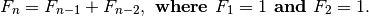
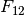

1000-digit Fibonacci number¶
Problem 25
The Fibonacci sequence is defined by the recurrence relation:

Hence the first 12 terms will be:
F_(1) = 1
F_(2) = 1
F_(3) = 2
F_(4) = 3
F_(5) = 5
F_(6) = 8
F_(7) = 13
F_(8) = 21
F_(9) = 34
F_(10) = 55
F_(11) = 89
F_(12) = 144
The 12th term, , is the first term to contain three digits.
What is the first term in the Fibonacci sequence to contain 1000 digits?
Solution
First, generate Fibonacci numbers.
def fib_gen():
"""Generator for Fibonacci numbers.
>>> from euler25 import fib_gen
>>> fg= fib_gen()
>>> [ next(fg) for i in range(12) ]
[(1, 1), (2, 1), (3, 2), (4, 3), (5, 5), (6, 8), (7, 13), (8, 21), (9, 34), (10, 55), (11, 89), (12, 144)]
"""
fn1= 0
fn0= 1
t= 1
while True:
yield t, fn0
fn1, fn0, t = fn0, fn0+fn1, t+1
Second, take Fibonacci numbers until the size limit is reached.
def fibTermLen( size ):
"""Sequence of Fibonacci numbers until value with the number of digits reached.
>>> from euler25 import fibTermLen
>>> fibTermLen(3) # 3-digit number
(12, 144)
"""
limit= 10**(size-1)
for t, fn in fib_gen():
if fn >= limit:
return t, fn
Test the components in this module.
def test():
import doctest
doctest.testmod(verbose=0)
assert fibTermLen(3) == (12, 144)
Compute the answer.
def answer():
t, fn = fibTermLen(1000)
return t
Confirm the answer.
def confirm(ans):
assert 4782 == ans, "{0!r} Incorrect".format(ans)
Create some output.
if __name__ == "__main__":
test()
ans= answer()
confirm(ans)
print( "The first term in the Fibonacci sequence to contain 1000 digits:", ans )